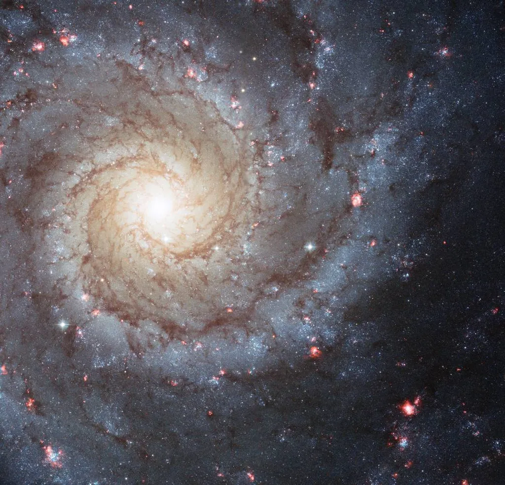
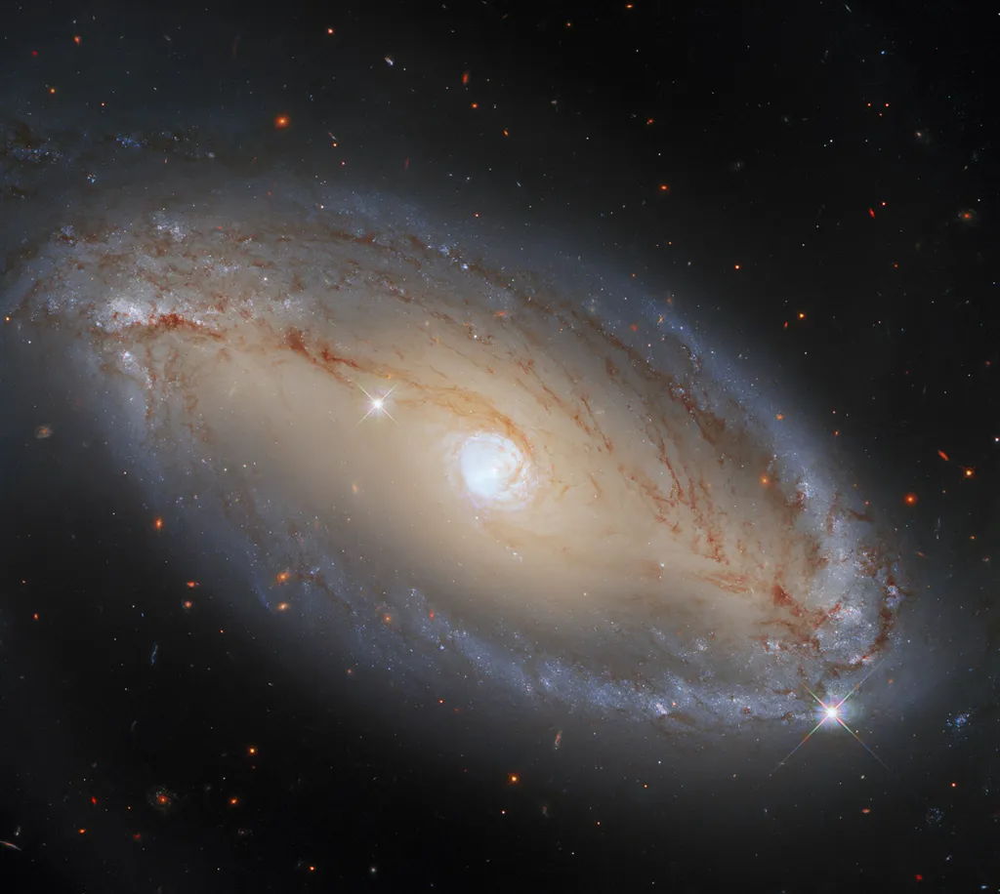
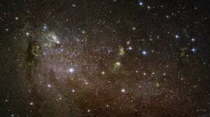
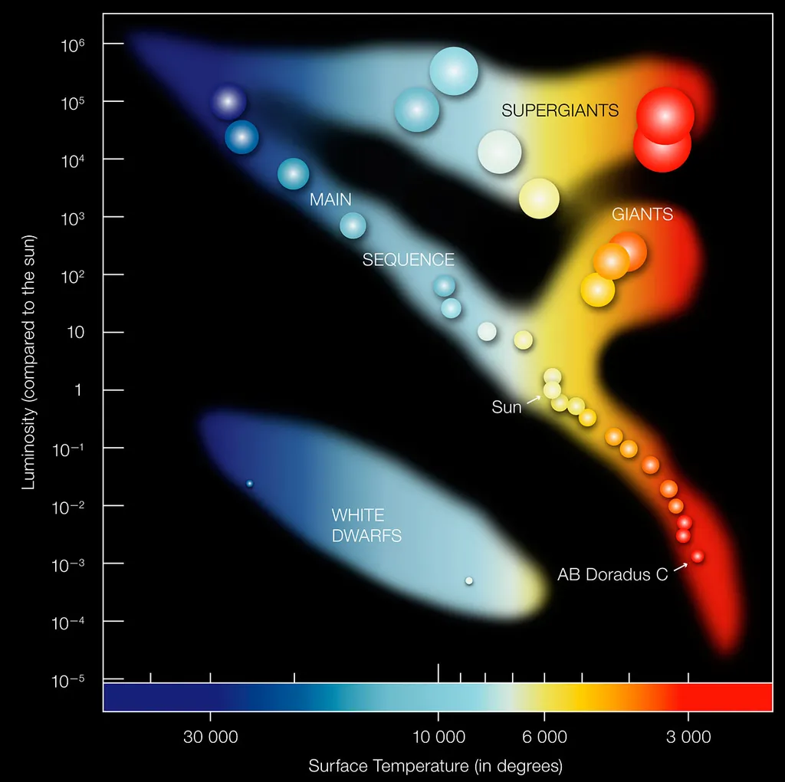

This page explores the large-scale structure of the universe, including galaxies, stars, and planetary systems.
Galaxies
Galaxies are enormous systems of stars, planets, gas, dust, and dark matter, held together by gravity. The universe contains billions of galaxies, each with millions to trillions of stars.
Space between galaxies is not empty - it is filled with intergalactic matter which has very low density.
Spiral galaxies (such as the Milky Way) are the brightest, composed of white and blue stars. They look like rotating flat disks, with so-called “arms” - gas, dust and young stars in the form of a line curved around the centre. Spiral galaxies evolve into ellipticals as they get older.

Spiral Galaxy (source: NASA)
Elliptical galaxies range from spherical to elongated shapes. They are composed mostly of older stars and contain very little gas and dust, leading to little new star formation.

Elliptical Galaxy (source: NASA)
Irregular galaxies lack a defined shape. They often appear chaotic and are rich in gas and dust, with active star formation.

Irregular Galaxy (source: NASA)
Stars
Stars are spherical objects made out of matter in plasma state (gases heated to high enough temperatures that electrons are separated from the atoms, creating the mixture of ions and electrons - ionized gas). They shine because of thermonuclear fusion of hydrogen into helium in their core, which releases energy in the form of light. Their life begins with the gravitational collapse of clouds of interstellar matter called nebulas, and ends with another gravitational collapse which happens when there is no more fuel left for thermonuclear reactions and creates a black hole.
Stars are classified in many categories based on many different characteristics, but the most important categorization is by temperature and luminosity (measure of radiated electromagnetic energy per unit time). This is how we get Hertzsprung-Russell diagram or H-R diagram.

Hertzsprung-Russell diagram
We can see from the picture that the vast majority of stars lays on the line stretching from the bottom right (low luminosity, low temperature) to the top left (high luminosity, high temperature) of the diagram. That line is called the main sequence. All stars of the main sequence are stable and in that phase they spent the biggest portion of their lives.
Above the main sequence, in the top right, are bright stars with low temperatures - giants and supergiants. Their radiuses are 100-1000 times bigger than the one of our Sun.
Below the main sequence, in the bottom left, are dim stars with high temperatures - dwarves. Their radiuses are very small.
Planetary Systems
A planetary system includes a star and all the celestial bodies orbiting it, such as planets, moons, asteroids, and comets. Our Solar System is the most well-known example, with the Sun and its 8 planets.
Dwarf Planets
Dwarf planets are bodies that revolve around the stars but do not fulfill the third requirement for being a planet - their orbits are not clear, they contain other bodies of not negligible size.
Natural Satellites
Natural satellites are bodies that revolve around the stars but also around one of the planets in the same system. Usually, their mass is more than 10000 times smaller than the mass of their planet, although some exceptions can be seen even in our Solar System.
Small Solar System Bodies
Small Solar System Body (SSSB) is an object in the planetary system that can not be considered neither a planet, dwarf planet or natural satellite. Those are primarily comets and asteroids.
Comets
Comets are icy SSSB-s. Their core (called nucleus) is made out of solid water, rocks, dust, frozen methane, ammonia, carbon-dioxide and carbon-monoxide. The core is hidden under the dusty surface containing various organic compounds. Comets have irregular shapes because of their low mass which doesn’t allow them to become spherical.
While a comet passes near its star, it vaporizes leaving traces of dust and gases behind. We see that as two separated comet trails.
Asteroids
Asteroids are another type of SSSB-s. Their size can vary significantly, from bodies around 1000km in diameter to as little as 1 meter long rock. Unlike comets, whose core is made primarily out of dust, asteroid composition can be carbon (C-type), silicone (S-type) or metallic (M-type).